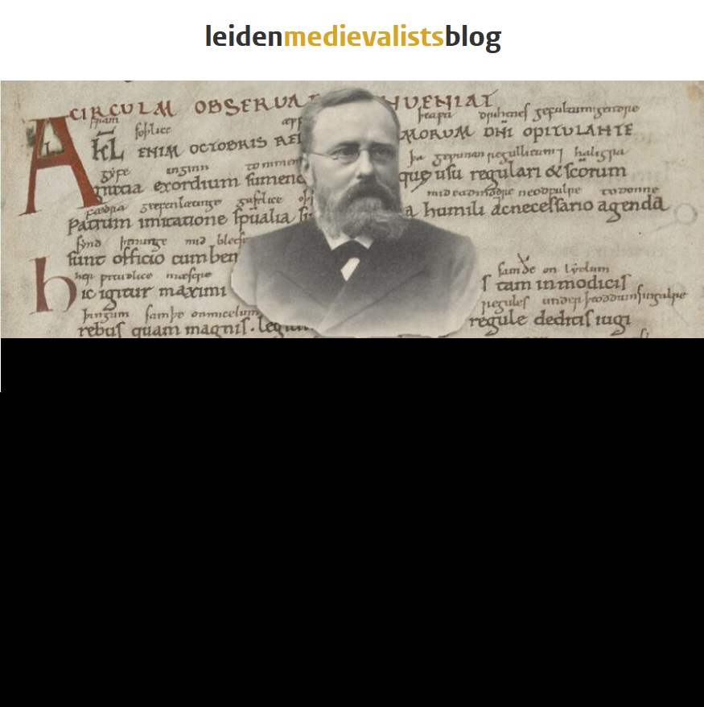
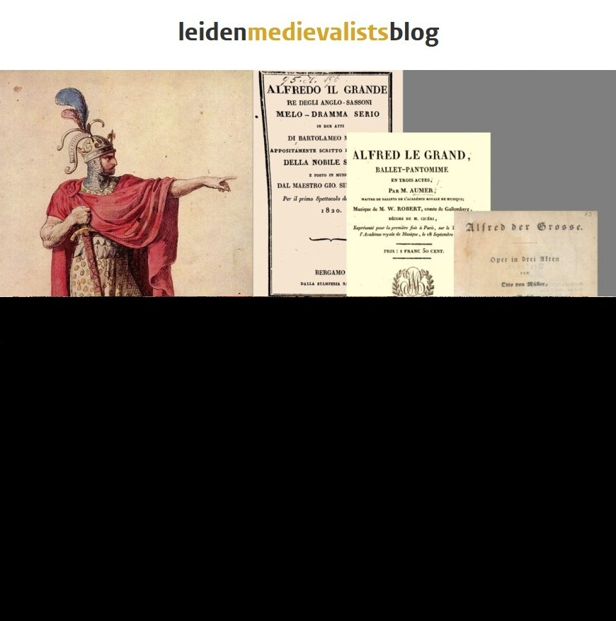
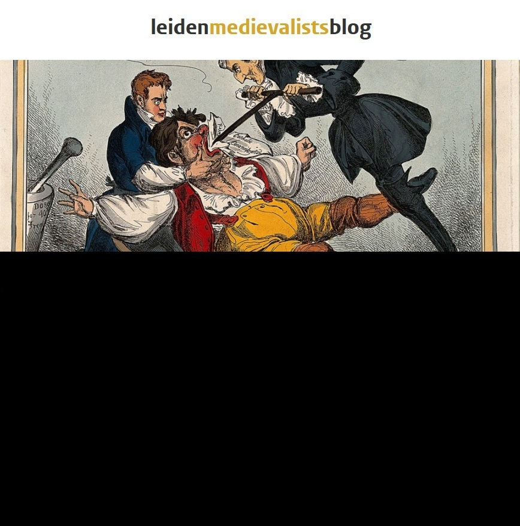

Updates, reflections, and insights from the EMERGENCE Project.

December 5, 2025 | Rachel A. Fletcher
Leiden Medievalists Blog

June 13, 2025 | Adrie Huijbrechts

February 21, 2025 | Lucas Gahrmann